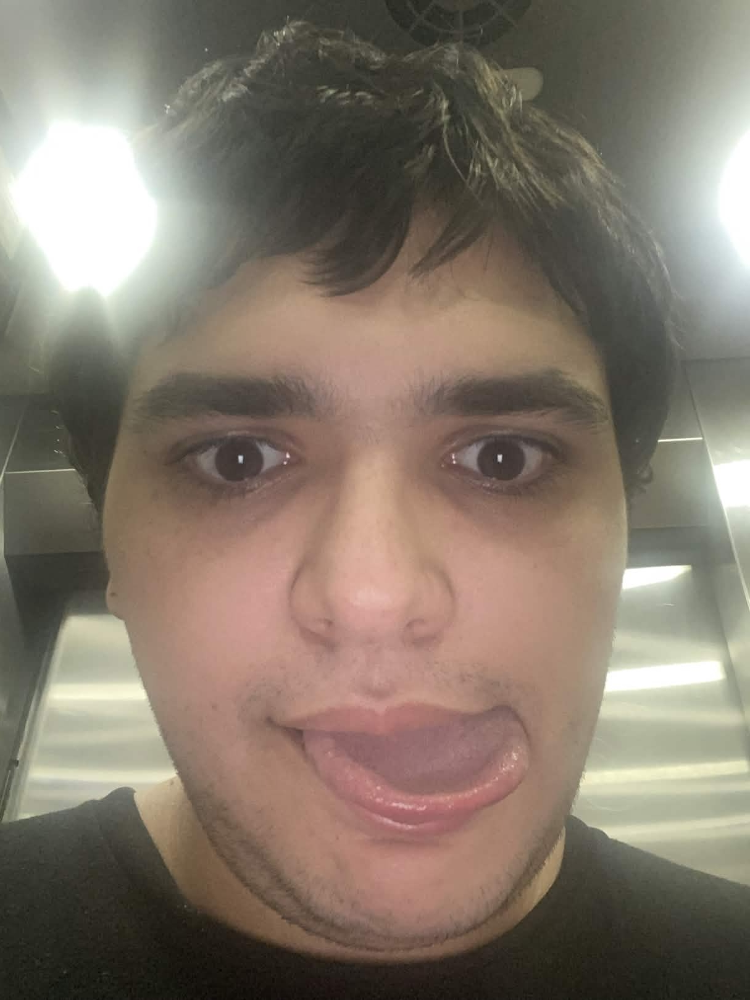

Navegação

"Nem todo mundo nasceu pra ser doutor, mas precisamos ser sempre o melhor naquilo que fazemos."
Meu nome é Erick Albert Daré, sou um estudante de Ciência da Computação na Universidade Vila Velha - UVV.
Minha história com a área de tecnologia vêm desde quando eu era criança, pois sempre amei mexer no computador e vislumbrar todas as tecnologias atuais e emergentes. Por isso, todas essas coisas inéditas para mim na época, me deixavam com essa pulga atrás da orelha de como era possível daquilo tudo existir e como eu poderia criar algo daquele tipo também, e foi durante o meu ensino fundamental que eu descobri que esse era o caminho que eu queria seguir na vida.
Meu objetivo como estudante dessa área é me tornar um ciêncista da computação renomado, bem como um símbolo reconhecido e respeitado no ramo, buscando sempre adquirir conhecimento e experiência dentro desse mercado, para que talvez um dia eu possa criar algo novo que surpreenda a todos, realizando o meu sonho de infância.
| Erick Albert Daré - 19 anos | |||
|---|---|---|---|
| Habilidades | Técnicas | HTML + CSS | Possuo experiência em HTML 5 e CSS, ja tendo feito vários trabalhos da faculdade utilizando tabelas, links externos, CSS interno e externo, até a criação de uma página completa. |
| Python | Tenho muita experiência na construção de algoritimos simples em Python, como joguinhos de advinhação, calculadoras de vários tipos, e algumas outras bobagens utilizando o "import random" | ||
| SQL | Possuo conhecimento básico em modelagem de banco de dados em linguagem SQL, utilizando o PostgreSQL como SGBD | ||
| UX | Tenho conhecimento básico em design de experiência do usuário (UX), com foco em criar interfaces intuitivas e agradáveis para os usuários, utilizando ferramentas como Figma para prototipagem e design de interfaces. | ||
| Lógica de Computação | Tenho conhecimento básico em lógica de computação, com foco em desenvolver habilidades de pensamento lógico e resolução de problemas, utilizando conceitos como algoritmos, estruturas de dados e análise de complexidade. | ||
| Pessoais | Aprendizado rápido | Tenho a habilidade de aprender rapidamente novos conceitos e tecnologias, o que me permite me adaptar facilmente a mudanças e desafios no ambiente de trabalho. | |
| Trabalho em Equipe | Tenho a habilidade de trabalhar eficientemente em equipe, colaborando com outros profissionais para alcançar objetivos comuns e resolver problemas de forma conjunta. | ||
| Proatividade | Tenho a habilidade de antecipar necessidades e oportunidades, agindo de forma proativa para resolver problemas e melhorar processos. | ||
| Comprometimento | Tenho a habilidade de me comprometer com os objetivos e metas estabelecidas, demonstrando responsabilidade e dedicação em todas as atividades. | ||
| Organização | Tenho a habilidade de organizar meu tempo e recursos de forma eficiente, garantindo que os prazos sejam cumpridos e que os objetivos sejam alcançados. | ||
Minha trajetória acadêmica têm sido marcada por uma jornada de auto-conhecimento. Durante grande parte da minha infânca e adolescência eu fui bajulado por sempre apresentarum desempenho acadêmico acima da média, mesmo com pouquíssimo esforço. Essa inflação de ego que eu recebi durante esse tempo se transformou em uma quebra de realidade durante meu ensino médio, quando recebi minha primeira recuperação final e quase fui reprovado devido minha negligência. Desde então sempre busco ser a minha melhor versão sem me deixar levar pela complacência, enquanto continuo aprendendo com cada experiência.
Meu início de carreira na área de tecnologia se teve obviamente com minha ingressão ao curso de Ciência da Computação. Os primeiros anos foram marcados por uma recaída, devido à minha recente desilusão e pelas diferenças entre ambiente escolar e universitário, porém isso não me impediu de superar essa minha insegurança e atualmente sou bem mais confiante comigo mesmo.
Atualmente estou cursando quatro matérias do primeiro período, sendo elas:
Aqui está uma lista dos meus hobbies, começando do mais ao menos praticado:
Até o momento, minhas unicas experências foram relacionadas ao meu desenvolvimento acadêmico e profissional, como por exemplo um emprego como operador de loja em uma grande empresa de varejo, e minha participação em algumas olimpiadas de matemática durante minha época de escola, como por exemplo:
Meus planos para o futuro incluem me formar em Ciência da Computação, e depois disso, buscar oportunidades de trabalho na área de tecnologia, como por exemplo desenvolvimento Full Stack, banco de dados, desenvolvimento de IAs e Cibersegurança. Também espero contribuir para a sociedade por meio da tecnologia, criando soluções que possam impactar positivamente a vida das pessoas, seja ela através de um aplicativo, um jogo, ou alguma outra forma de tecnologia. Sou uma pessoa muito ambiciosa e sempre busco novas formas de aprender e me desenvolver, para poder me destacar na área e deixar minha marca nesse mundo.
Quero poder trabalhar em uma empresa Multinacional e ser reconhecido por meu trabalho e contribuições lá dentro. Quero poder contruir uma excelente estrutura financeira, para poder ter a liberdade de escolha que desejo e poder viver a vida que sempre sonhei junto de minha família. Além de meu sonho na área de tecnologia, meu maior e mais audacioso sonho como pessoa é poder ir para a lua, mas pra isso preciso me dedicar e ser sempre o melhor naquilo que faço.